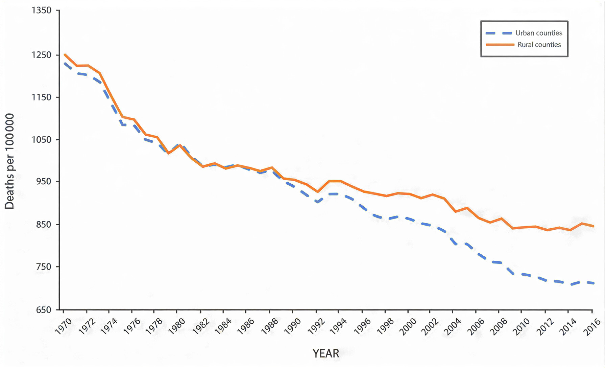

Kamryn Brown, Sanjana Surapaneni, Michael Zeng, Winnie Zhang
Most Americans are aware that rural communities face significant health challenges. However, understanding the magnitude and causes of these disparities requires deeper analysis.
Data visualization allows us to quantify these differences and reveal how the gap between rural and urban healthcare has grown over time.
This heat map visualizes premature death rates across U.S. counties, revealing clear geographic and demographic disparities in health outcomes. Darker red regions indicate higher levels of premature mortality, signaling worse healthcare outcomes, while lighter areas represent relatively healthier populations. A noticeable pattern emerges in which many of the darkest clusters appear in counties with higher rural populations, particularly across parts of the South and Midwest. Even when filtering between urban and rural classifications, rural counties consistently exhibit higher premature death rates, suggesting systemic differences in healthcare access, socioeconomic conditions, and resource availability. By maintaining a consistent color scale across filters, the visualization highlights that these disparities are not artifacts of rescaling but reflect genuine differences in health outcomes. Overall, the map underscores a widening rural health disadvantage and supports the broader argument that geographic location plays a significant role in determining population health.

Rural hospital closures have increased much faster than urban closures, widening the healthcare access gap.
This is especially concerning because rural areas already have fewer hospitals to begin with.

Most Americans already know that rural communities face worse health outcomes. But this chart shows that it wasn’t always this way.
For much of the late 20th century, urban and rural mortality rates moved closely together, falling at nearly the same pace. The gap was almost easy to overlook. Around the 1990s, the lines begin to separate with urban areas continuing to improve. Rural areas slow down, then stall. What was once a narrow difference turns into a clear and persistent divide.
This shift suggests the problem isn’t something fixed or inevitable about rural places, it is something that developed over time. Key moments and policy changes like the Balanced Budget Act, expansions under the Affordable Care Act, or shocks like COVID frame where that separation accelerates.
Alongside the other visuals, a wider perspective reveals this isn’t just a known issue, but a growing one. What began as a small difference slowly snowballs over time. Each year adds a little more distance, reflecting differences in access, resources, and how far the healthcare system reaches.
This project highlights a growing disparity in healthcare quality between rural and urban communities. Through visualization, we can better understand where and why these gaps exist and why they continue to expand.